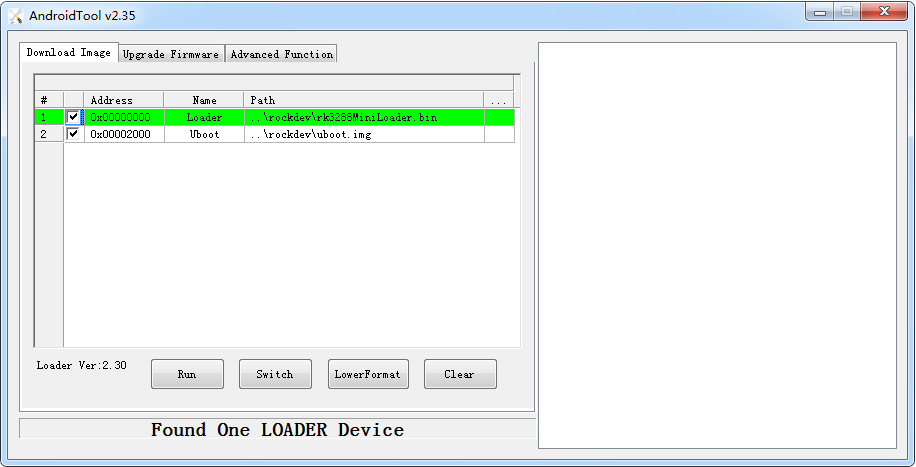

U-Boot¶
Introduction¶
RK U-Boot based on the open source U-Boot development, work mode has a Boot loading mode and download mode. Boot load mode is the normal working mode of u-boot, embedded product release, u-boot is working in this mode, mainly used for Boot to load the memory of the kernel into memory, start the operating system; Download mode is mainly used to download the firmware to flash memory, and press the Recovery button to enter the download mode after startup time. This article briefly explains the use of u-boot. Please refer to the development document v3.0.pdf of the RKDocs/common/uboot/RockChip_Uboot directory under the SDK for more relevant documents.
Compile¶
The compiling steps of U-Boot are similar to kernel compiling. Before compiling, you need to write the configuration to .config, run the command:
Android:
make rk3399_box_defconfig
Linux:
make roc-rk3399-pc_defconfig
If you need to modify the relative option, you can run:
make menuconfig
Run below command to compile:
make ARCHV=aarch64
After compiling successfully, there will be a new file created at the follow path:
u-boot/uboot.img
u-boot/trust.img
u-boot/RK3399MiniLoaderAll_Vx.xx.bin
Flash Image¶
Open the upgrade tool, connect the board with the USB OTG cable, press the Recovery key when the power is on, and make the development board enter the U-Boot download mode. Select the compiled Loader file in the upgrade tool and click execute, as shown below:

Verify that the new Loader is correctly upgraded¶
If you flash the loader successfully, there will be some information output from the debug UART as the follow log shows:
#Boot ver: 2016-12-19#1.05
If the time shows the same as your compile time, it means you flash the loader successfully.
Enter u-boot command line mode¶
Since Firefly product is mainly used for development, we set the 1 second countdown time when starting up by default. At this time, if any key is input in the serial port, it can enter the u-boot command line mode. The product released does not need to enter the U-Boot command line mode. If U-Boot is not required to enter the command line mode by default, the following modifications can be made:
In the file: u-boot/include/configs/rk33plat.h
/* mod it to enable console commands. */
#define CONFIG_BOOTDELAY 1
If the macro CONFIG_BOOTDELAY is changed to 0, it will not enter command line mode by default.
Primary Loader(RK3328)¶
U-Boot is a primary loader mode, so it only supports the EMMC storage device, and the result is a mirror image of the generated after the compilation:
RK3288LoaderU-BOOT_V2.17.01.bin
Where V2.17.01 is the released version number, rockchip defines the version of U-Boot loader, where 2.17 is defined according to the stored version, the customer must not modify this version, 01 is a small version of u-boot definition, the user according to the actual needs in the Makefile to modify.
Secondary Loader(RK3399/RK3399PRO)¶
U-Boot as a secondary loader mode, then the firmware support all storage devices, this mode, need MiniLoader support, through the macro CONFIG_MERGER_MINILOADER to configuration generation. With the introduction of Arm Trusted, Firmware will produce a trust image that will be configured with the CONFIG_MERGER_TRUSTIMAGE macro.
u-boot/uboot.img
u-boot/trust.img
u-boot/RK3399MiniLoaderAll_V1.05.bin
Where V1.05 is the released version number, rockchip defines the version of U-Boot loader, where 1.05 is defined according to the storage version, the customer must not modify this version. uboot.img is U-Boot as a secondary loader of packaging. trust.img is U-Boot as a secondary loader of packaging.
V1.05 is the version number of the release, rockchip defines the U-Boot loader version, which is based on the 1.05 version of the definition of storage, customers must not modify this version. uboot.img is U-Boot as a secondary loader package. trust.img is U-Boot as a secondary loader package.